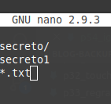
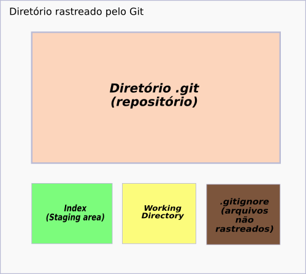

Caso você queira que o Git não enxergue determinado(s) arquivo(s) dentro do seu diretório que está sendo rastreado, precisamos criar o seguinte arquivo:
$ touch .gitignore
- $ indica que você deve usar o usuário comum para fazer essa operação.
- touch serve para criar arquivos no Linux pelo terminal.
- .gitignore deve ser o nome do nosso arquivo de texto.
Abrindo esse arquivo, vamos digitar dentro dele o que queremos deixar de fora do repositório.
Exemplo:
Assim temos:
- uma pasta como primeiro item, pois ela termina com a barra.
- um arquivo sem extensão no segundo item.
- no terceiro item estamos adicionando na lista qualquer arquivo que **termine com a extensão txt**.
É importante notar que devemos informar um tipo de arquivo por linha.
Os arquivos descritos dentro do arquivo .gitignore não aparecem no Working directory.
- Working directory: é onde estão seus arquivos que serão trabalhados. Onde ficam os arquivos que ainda não receberam o comando commit.
Agora basta adicionar o arquivo .gitignore e fazer o commit dele.
